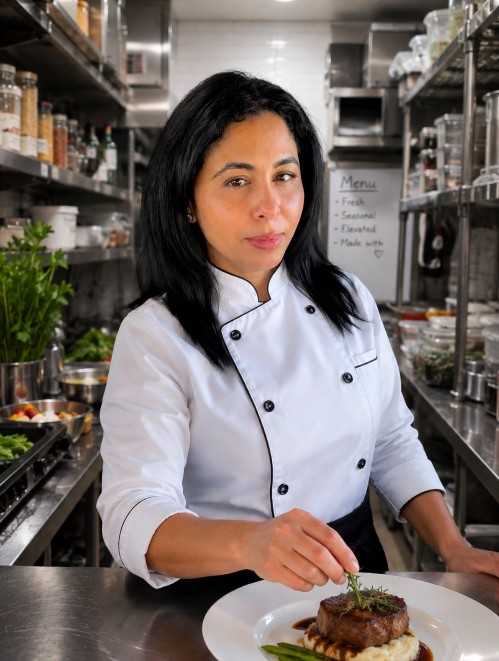

About me
Hi, I’m Hannah Berry, a private chef based in West Virginia with a deep love for food, community, and the incredible seasonal ingredients found on the East End. I’ve been working in the restaurant industry for over 20 years, but my passion for cooking started long before that, right at home in the kitchen with my mother. She taught me that cooking isn’t just about feeding people. It’s a way to express love, creativity, and care. That early connection to food shaped everything I do today. When I cook for clients, it feels like I’m cooking for friends in my own home. It’s how I express myself, and that energy shows in the quality of every dish I make. I grew up in West Africa and now live in West Virginia, where I stay closely connected to local farms, fishers, and artisans. I believe the best food starts with the best ingredients, and I’m proud to support the people who grow and raise them. Every menu I create is tailored to your preferences and built around what’s fresh and in season, whether it’s a casual backyard brunch, a cozy family dinner, or a multi-course celebration. It took me seven years to build a team of chefs I’m proud to send in my name. These are people who share my values, my attention to detail, and my heart for this work. Robyn’s Kitchen has become more than just a personal service. It’s a company I truly believe makes people feel cared for, seen, and happy through food. When I’m not in the kitchen, you’ll find me exploring farmstands, writing about food and farming, or making memories with my son. Hannah's Kitchen is a reflection of everything I love, and I can’t wait to cook for you.
Private chef Hannah's Kitchen offers seasonal, farm-to-table meals made with local ingredients for families, events, and intimate gatherings across the East End.
hannahthomas1977@yahoo.com